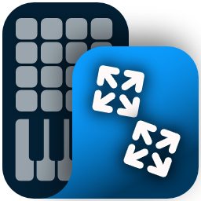

7. Watching a connection. Right-click a connection and pick Watch messages. A small window opens with everything that goes along that connection, live, while the patch routes or while you test it. Open as many as you like. Each window and its connection share a number and a color, so you can tell which is which.

Studio Rig — Windows MIDI Patchbay
PREVIEW
Impact LX Mini
Nektar · KSA
Keeps out system real-time messages
Sends at MIDI 1.0 wire speed
General MIDI Synth
Microsoft · GMSYNTH
Bass Station II
Novation · KSA
80%Fit
4 endpoints5 blocks8 connections212 messages a second
Watching 2
1
2
3
4
- Right-click a connection. Today a connection has no menu of its own; this adds one, with Watch messages first. Mute, Put a step in the middle and Remove are things you can already do another way, gathered where people will look for them. The heading names the connection, the same way the window will. Ctrl+M watches the selected connection from the keyboard. A step's or endpoint's own menu gets Watch everything out of this, which opens one window for all of its connections out (window 2).
- A real window, not a panel. It can go anywhere, including another monitor, and it stays on top of the editor by default (the pin in its title bar turns that off). It closes when the editor window for this patch closes, and it isn't in the taskbar on its own. The title names the connection, so Alt+Tab and screen readers can tell several apart.
- Watching what comes out of a step adds a Went to column, since the messages go along more than one connection. Watching a single connection doesn't need it: the From and To line at the top already says where every message is going.
- The connection shows it's being watched with a numbered dot in the window's color. Closing the window takes the dot away. Click the dot to bring that window forward. Muting or removing a connection doesn't close its window; page 8 shows what it says.